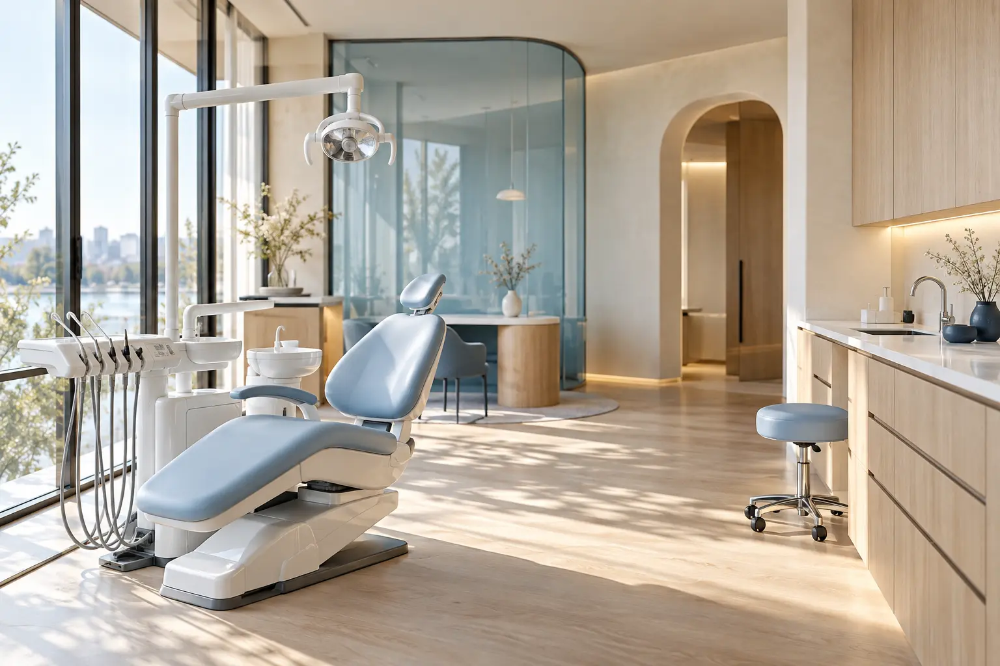

Стоматологическая клиника
Забота о зубах.
С вниманием к вам.
Лечение, профилактика и восстановление зубов. Познакомьтесь с врачами, узнайте об услугах и сделайте первый шаг к приёму.
Всё, что важно.
Ещё до первого визита.
и понятный прайс↗ 02 / ИнформацияСведения о клинике
и документы↗
Для здоровья.
Для вашей улыбки.
От профилактики до восстановления зубов. Выберите направление и посмотрите, какие услуги в него входят.

Доверие
начинается
с ясности.
Знакомство с клиникой начинается до визита. Посмотрите кабинет, узнайте о врачах и найдите информацию, которая поможет подготовиться к приёму.
Информация для пациентовЛюди, которым
вы доверяете улыбку.
Познакомьтесь со специалистами до приёма. В карточке каждого врача — образование, квалификация и направления работы.
Первый шаг.
Всего один звонок.
Можно обратиться без выбора процедуры. Администратор уточнит запрос и поможет согласовать врача, дату и время.
- 01↗
Оставьте номер
Для заявки достаточно телефона. Имя можно указать по желанию.
- 02↗
Согласуйте визит
Администратор свяжется с вами в рабочее время и уточнит детали записи.
- 03↗
Познакомьтесь с врачом
На приёме врач обсудит ваш запрос и объяснит возможные дальнейшие шаги.
Перед
приёмом.
Коротко о том, что важно знать.
Истории
наших пациентов.
Отзывы со ссылкой на источник помогают познакомиться с опытом пациентов и прочитать историю целиком.
До встречи
в клинике.
Адрес, часы работы и ориентиры для входа — всё, чтобы удобно спланировать визит.
Маршрут появится после добавления адреса клиники
Открытая
информация.
Сведения о клинике и документы.
По этому запросу документов нет.